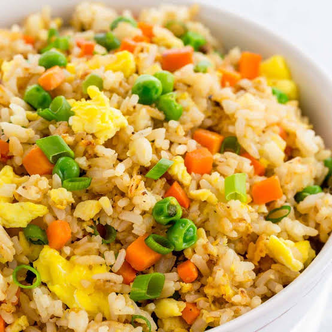

Fried Rice

Description
This recipe is for fried rice. I've made a variation of fried rice since I was in college and it is one of the few things I can cook. Pretty easy to mix in leftovers to make it delicious!
Ingredients
- Rice. This can be white or brown. Ideally leftover rice, as it's stickier and provides better adherence so your fried rice does not fall apart.
- Vegetables of your favorite variety. I personally prefer corn, peas, and carrots.
- Spices
Spices
- Salt
- Pepper. Can be course or fine depending on your texture preference. I like to add white pepper with black pepper personally
- Additional spices such as Mrs. Dashes "Onions and Herbs" blend.
- Meat. This can be chicken, pork, bacon, etc.
- Other ingredients. I like to add eggs!
Steps
- Cut up your ingredients such as vegetables or meats. I like to cut my bacon in to very small bits.
- I like to scramble my eggs at this point if I have any.
- Cook your meat in a skillet on medium heat on your stovetop. If using bacon you don't need to add any oil as the fat in the bacon will be enough, otherwise add a small amount of cooking oil to prevent sticking of the pan.
- Cook your rice in the pan with your meat. Add cooking oil if needed to prevent sticking. I like to add a dash of soy sauce at this point as well.
- Add you vegetables and cook thoroughly. Ensure your meat and veggies are up to temperature to prevent food poisoning.
- Add your spices and flavorings and any additional ingredients. Mix thoroughly.
- Turn off the heat and allow to cool for 5 minutes.
- Serve!